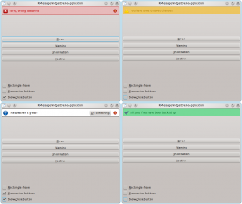

KDE UX sprint 2011 ended up last Sunday in Berlin. I was really looking forward this sprint: I had quite a few ideas I wanted to discuss and was really enthusiast to have the occasion to meet Peter Sikking. In case you don't know him, Peter is a User Interaction Architect, founder of man + machine interface works. Among other things, he is working with GIMP developers and has also helped Krita developers define their project vision.
We kicked off the sprint on Friday (late) morning with a round of introductions. On his turn, Sebas impressed anyone with the number of devices he managed to get out of his bag, all of them running Plasma Active. We then talked about QML and what impact it would have on the future before puting together a rough plan of what we would do during the sprint.
We split in different groups on Friday afternoon and a few of us dissected the idea of standardizing an emerging UI trend: modeless inline bars. These bars are used to:
I came here with a very rough idea and was amazed at how Peter and his colleague Kate methodically broke it down to reconstruct it into a much more precise vision. I did not expect us to spend so much time on it, but I think I learned a lot from the discussion, both on the subject itself and on the way to approach such problems.
More details can be found on this wiki page. I started implementing it on Sunday evening. Here is a montage of what this early version looks like:
Implementation is in agateau/kmessagewidget branch of kdelibs, in kdeui/widgets/. Example program is in agateau/kmessagewidget branch of kdeexamples, in kmessagewidget/.
We switched to Calligra for the afternoon: Casper Boemann wanted to discuss ways to improve the main window layout of Calligra applications. It turned out to be quite difficult to define a layout which:
Unfortunately, I am having trouble remembering the exact outcome of the discussion, I blame a lack of sleep/caffeine for that :)
He presented an interesting demo showing list views which turned themselves into combo boxes or popup buttons if vertical or respectively horizontal space become too small. You can learn more on this wiki page and get the demo from here.
In the afternoon we switched to discussing "Activity-centered desktop" an idea from Björn Balazs (who worked on the design of Kontact Mobile). Björn idea is quite ambitious: make the computer smart enough to adapt its interface based on what the user wants to do. His example was the user writing a letter to a friend: in Björn vision, the user would be presented with a place to type his letter grouped with relevant entries from Akonadi address book. This interface would be different from the interface the computer would propose to the user if the recipient of a letter were, for example, an institution. In the long run, Björn envisions a system which would no longer work with separate applications, but rather non-ui components providing services and ui components based on the non-ui ones and assembled together to present adapted interfaces.
Will there are quite a few dark areas to me, in particular how the computer would guess the user needs, I think this vision has a lot of potential.
We wrapped up the day and the sprint with a discussion on how to continue cooperating to work on KDE user experience. Right now we have the kde-usability mailing list and the #kde-usability Freenode IRC channel. We used to have regular IRC meetings which we agreed were interesting and productive, Celeste said she was worried those meeting would not happen if she did not do the work to set them up (Bus factor is close to 1 there unfortunately). Nevertheless she agreed to resurrect them. I am happy to see the meetings coming back, as I really enjoyed them.
Finally, it was time to get back home, exhausted but delighted to have met so many nice people. My mind is even more filled with ideas for nice and usable user interfaces in KDE applications, time will tell if I can turn some of them into real code.
Thanks a lot to all the people involved in setting up this sprint, in particular to Celeste and to Relevantive for letting us use their amazing office for the time of the sprint!
{kind=link}